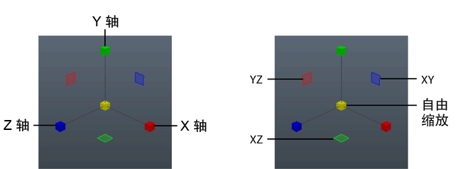

缩放对象或组件将更改其大小。缩放从对象的枢轴处开始。如果选择了多个对象，则从其公用枢轴点（即：添加到当前选择（关键对象）的最后一个对象）处开始缩放。对于组件，枢轴点位于所有选定组件的中心。
缩放对象或组件
- 选择一个或多个对象或组件。
- 单击工具箱(Tool Box)中的“缩放工具”(Scale Tool)图标
 ，或按 R 键。
，或按 R 键。
如果要先更改缩放工具(Scale Tool)的设置，请双击其图标，以便在“工具设置”(Tool Settings)面板中显示其选项。
- 通过以下方法使用缩放操纵器，可以缩放选定的对象：

- 拖动中心框可以沿所有方向均匀缩放。
- 沿 XYZ 轴控制柄的长度方向在任意位置拖动，以便沿该轴进行缩放。
- 拖动平面控制柄以沿该平面的两个轴进行缩放。例如，拖动绿色的平面控制柄可沿 XZ 平面缩放。
- 单击轴或平面控制柄使其处于活动状态（黄色），然后使用鼠标中键在视图中的任意位置拖动以沿该轴或平面缩放。
- 按住 Ctrl 键并单击一个框以激活其相应平面控制柄，然后进行拖动以沿该平面缩放。
- 若未选择操纵器的任何部分，请按住 Shift 键并使用鼠标中键进行拖动，以便沿您在视图中拖动的方向缩放。
提示： 按住 R 键并单击对象，可显示“缩放工具”(Scale Tool)的标记菜单。该菜单包含缩放工具(Scale Tool)的“工具设置”(Tool Settings)中可用的相同选项。
此外，还可以使用组合式移动/旋转/缩放操纵器缩放对象或组件。
若要使用精确值进行缩放，请参见使用精确值移动、旋转和缩放对象